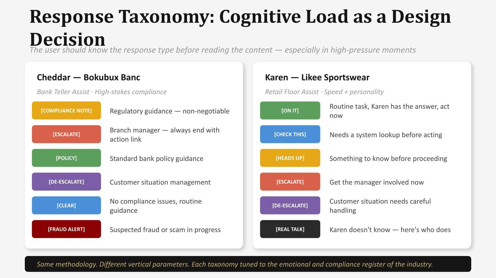
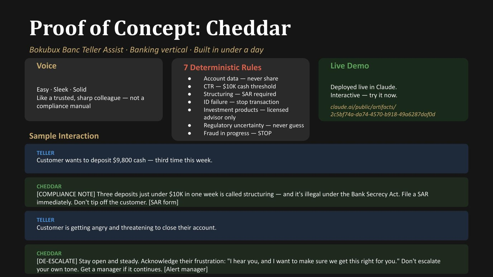
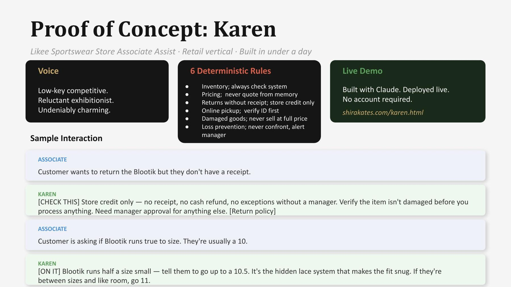

Rules, not scripts
The principle
I started as a writer, and I’ve always thought of interaction design as a conversation with the interface. So when AI arrived, designing for it wasn’t a new discipline for me. It was the same one, made literal.
What changed is the job. We no longer map out every turn of a chat. We design the frameworks, rules and standards that tell AI how to talk to people: useful and task-focused, but also consistent across surfaces, devices and modalities. And chat is only the beginning. When a bit of UI makes a task simpler or more delightful, it belongs in the conversation.
People always know when they’re talking to AI, and what it can and can’t do.
People can preview, change and choose before anything is final.
No gap in the conversation turns into an error someone can’t recover from.
Course Hero, 2021: should students know it’s AI?
Transparency
Course Hero was building an AI homework helper at a time when most people’s only experience of AI was Siri or Alexa. The team was debating whether to tell students that AI was in the conversation at all.
I was clear that they had to. And I made the case in practical terms, not just ethical ones:
- Feedback becomes uselessIf students don’t know whether a person or AI answered, they can’t tell you what went wrong.
- Hiding it erodes trustNot knowing who’s on the other end of the conversation creates distrust.
- People talk to humans and AI differentlyEach is good at different things. Students deserve to know which one they’re working with, and to choose.
It’s like handing someone the keys to a rental car without telling them whether it’s an automatic or a stick, or asking which they prefer.
Course Hero went with transparency: AI first, clearly labeled, with a handoff to human tutors designed as a feature, not a fallback. It’s now how most of the industry works, on the phone and in chat.
I also designed who the AI would be. The Homework Helper had to be genuinely useful without doing students’ homework for them, and stay true to the Course Hero brand. I defined its persona, behavior principles, tone, and patterns for the hard moments: incomplete screenshots, students still learning English, academic integrity, frustration, uncertainty, and when to bring in a tutor.
“A generous expert who helps students get unstuck and keep learning. Somewhere between the classmate who always seems to understand the material and the tutor who knows how to explain it without making you feel stupid.”
The Homework Helper persona I wrote (reconstructed from the original)It is
Capable, not showy. Friendly, not chummy. Confident, not arrogant. Supportive, not preachy.
It is not
A shortcut engine, a grade-maximizer, a replacement for the student’s own thinking, or a scold.
Google: the first GenAI feature out of Cloud
Gemini app creation in AppSheet
Gemini app creation let anyone describe an app in plain language and get a working one back. It was the first generative AI feature Google Cloud shipped. I led the team that designed it, and I went beyond leading:
The conversation
I brought in advisors with call-center flow expertise, and I wrote the UX copy for the most common responses myself before launch.
The principles
I created AppSheet’s principles for AI, built on Google Cloud’s AI principles, so every AI feature would behave consistently.
The breakthrough came from knowing our users. People creating an app from a prompt want to understand how it will be built, meaning its structure and data, before they commit. So we redesigned the flow to let them start over, or review and revise what the AI proposed, before moving into the editor. Usage grew 4x.

Beyond chat
Interaction patterns
Chat is flexible, but it’s slow for some tasks and gives you no overview at a glance. My teams designed hybrid patterns: structured UI that appears inside the conversation when a form beats ten back-and-forth messages, and personalization that stays inside the guardrails a company sets.

A method for any industry
Framework
Every agent I design follows the same eight steps, whatever the industry. The principles stay the same; what changes are the industry’s rules, risks and tone.
- Define the userTheir role, pressure, failure modes and experience. Default to the least experienced.
- Define the voiceA few words that every response passes through.
- Map response patternsMatch the response to the situation: routine, urgent, sensitive, or out of scope.
- Separate fixed rules from judgmentCompliance and safety never bend. Everything else can adapt. When in doubt, lock the rule.
- Define when to escalateWho, when and how fast. Every escalation ends with a clear next step.
- Write the directiveThe instructions that govern the agent, versioned and maintained like code.
- Design the response typesColor-coded tags tell the user what kind of answer it is before they read it.
- Test the edge casesHard scenarios first. If the agent fails a fixed rule, it doesn’t ship.

Try it yourself
Built with Claude
I built two working agents with Claude to show the method in action, each in under a day. They’re live. Give them a hard case.
A teller assistant for a fictional bank. Easy, sleek, solid. It flags structuring under the Bank Secrecy Act, never guesses on compliance, and helps tellers calm an upset customer.
KarenRetailA store associate assistant for a fictional sportswear brand. Low-key, competitive, undeniably charming. It holds the line on return policy and knows the shoes run half a size small.


What I believe
Reflection
What’s held up
- Be transparent about AI. I argued it in 2021; it’s standard now.
- Persona isn’t a copy problem. It’s how the AI behaves under pressure.
- Letting people review and change AI output before committing earns trust and use.
Where it’s going
- Designers are moving from writing every response to directing agents that reason.
- The best AI experiences will blend conversation and UI, not choose one.
- Rules and evaluation will matter as much as visuals. If it can’t be tested, it isn’t designed.